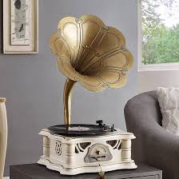

Quincke Tube (Acoustic Interferometer)
A sealed, 3D-printed speaker lid that made an acoustic interference demo clearly audible for an intro physics class.

Context
A professor teaching an introductory physics class wanted an interferometer demo that didn't involve lasers. She had heard of the Quincke tube and asked our lab technician to build one. The first version used PVC tubes and our old speed-of-sound speakers.
Problem
The speed-of-sound speakers fit neatly into the mouth of the PVC pipe, but they couldn't produce a loud enough output without leaking sound, which added interference we didn't want.
Approach
We clearly needed both a louder speaker and less leakage. The technician suggested switching to computer speakers, and I suggested adding insulation and a lid. We first tried foam insulation that I cut out on its own, but leakage persisted.

Propping the tubes up on the foam was also difficult, even with multiple table clamps. To solve both issues, I designed and 3D printed a thick PLA lid.
Result
With the lid attached over the foam insulation, the interference created by displacing the tubes became much more apparent. The professor, the lab technician, and I were all satisfied with the demo.
Future improvement
Adding a horn, like on a gramophone, may help increase output.
